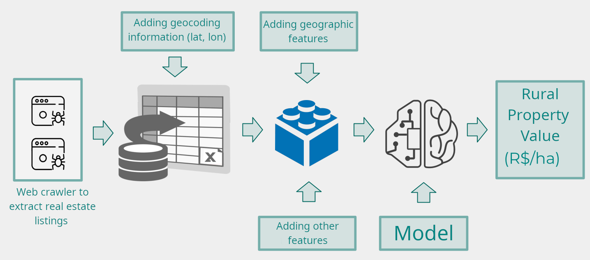

(S)ituation: In 2022 at Gaivota and 2023 at Seedz, I led a project to develop a machine learning solution for rural property valuation—an essential process for enabling credit, insurance, estate planning, and land transactions in Brazil.
(T)ask: Our mission was to create a reliable and scalable model to estimate rural land value across Brazil, despite the major challenge of limited and fragmented data availability.
(A)ction: We began with a literature review to understand domain-specific methodologies, followed by a deep exploration of public datasets. Due to the absence of a centralized property price database, we developed a web crawler to extract real estate listings and geocoded them to enrich the dataset with geographic features like terrain and altitude. We carried out robust data cleaning, outlier removal, and feature selection to ensure data quality. We also tested correlations between land prices and commodity prices, identifying that their negative correlation limited their predictive value. Multiple machine learning models were experimented with, and a RESTful API was deployed to integrate the solution into internal applications.
(R)esult: We achieved promising model performance despite limited data, and learned that nationwide data expansion and quality improvements are crucial to further enhance accuracy. The solution laid a foundation for scalable rural valuation and demonstrated the power of combining research-driven methodologies with applied data science.
As Data Science Manager at Gaivota in 2022 and Seedz in 2023, I led a project focused on rural property valuation. This process involves determining the price of rural properties such as farms and agricultural land, which serves various purposes including securing credit, property insurance, estate division, and property transactions.
To begin our project, we initiated by conducting a comprehensive literature review to gain valuable insights into the field. During this phase, we identified pertinent research papers specifically addressing this issue within the Brazilian context. These papers not only shed light on critical features and methodologies but also illuminated valuable considerations for tackling this complex problem.
Subsequent to the literature review, we proceeded with an extensive exploration of publicly available datasets related to the valuation of bare land. It's important to note that our foremost challenge at this stage was the absence of a comprehensive property price database. To overcome this problem, we implemented a web crawler to extract pricing information and property specifications (e.g., location, area) from real estate listing websites. Furthermore, we conducted geocoding to obtain latitude and longitude coordinates, thereby enriching our dataset with geographic attributes such as terrain and altitude. During the data distribution analysis, we identified a significant data concentration in the Southeast region of Brazil. We implemented a rigorous feature selection process, enabling us to retain only the most pertinent data while eliminating noise. Additionally, we conducted data cleaning and outlier removal to ensure the quality of our dataset.
One key aspect of our analysis involved examining the correlation between the value of bare land and other features, such as prices of commodities such as soybeans, corn, and cattle. Over the period of our study, we observed a decrease in commodity prices throughout the year, accompanied by an increase in rural land prices. This negative correlation was not a suitable variable to serve as a reliable predictor in our model.
In our pursuit of predicting rural property values using the chosen features, we conducted a series of experiments employing diverse machine learning methodologies. As a result, we attained outcomes that can be characterized as reasonably promising. Nevertheless, an important lesson that emerged from our endeavors was the necessity to enhance data quality and broaden data coverage nationwide. These enhancements are essential to elevate the precision of our predictive model.
 Figure 1: This figure summarizes the key steps of the project, from developing a web crawler to extract real estate listings to implementing a machine learning model for property valuation.
Furthermore, we deployed a Restful API to provide an interface for internal applications to access our model. This project was quite challenging due to the limited data we had to work with. My experience as a researcher was essential in helping us navigate and overcome the obstacles we faced. I'm incredibly proud of the dedication and hard work our team put into this project.